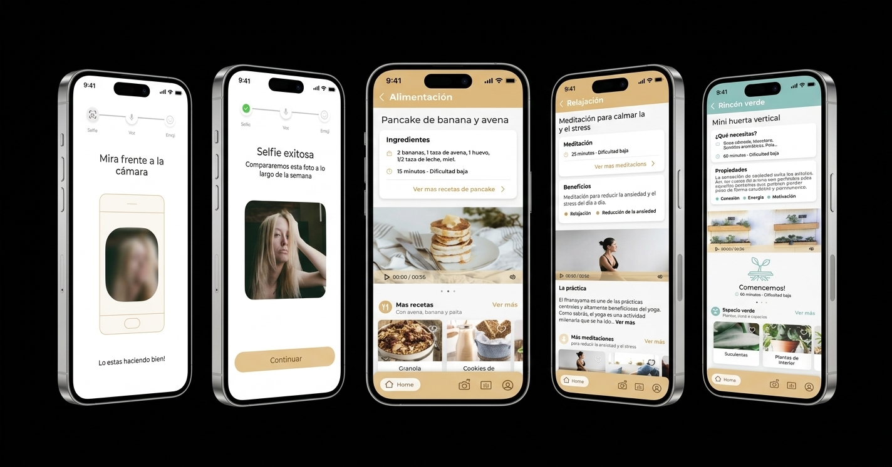
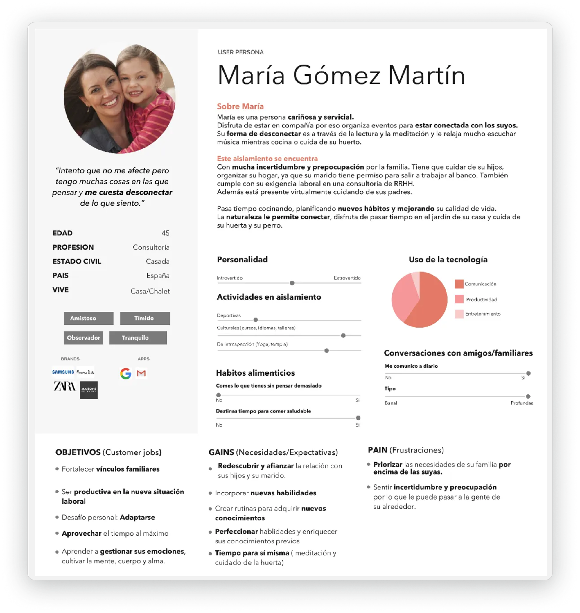
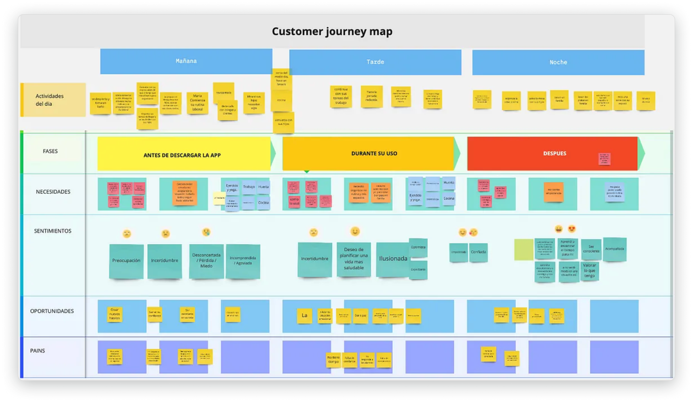
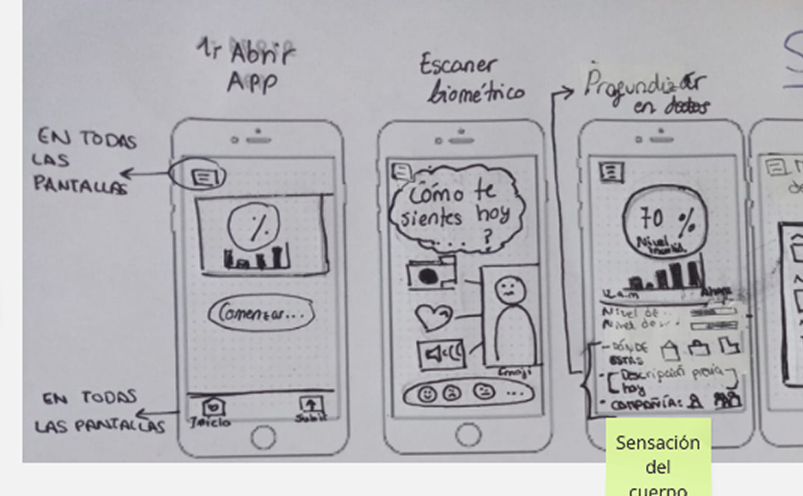
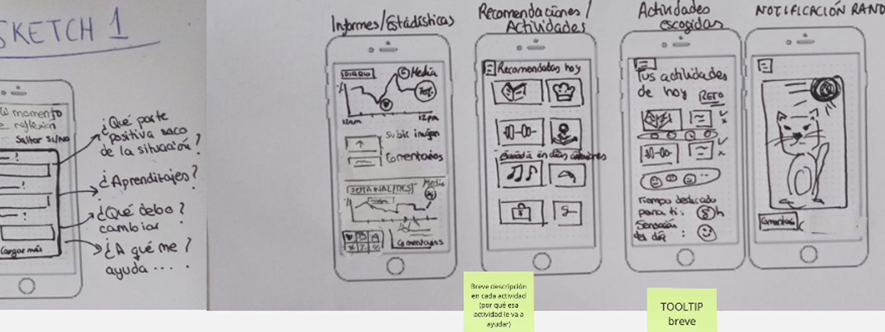
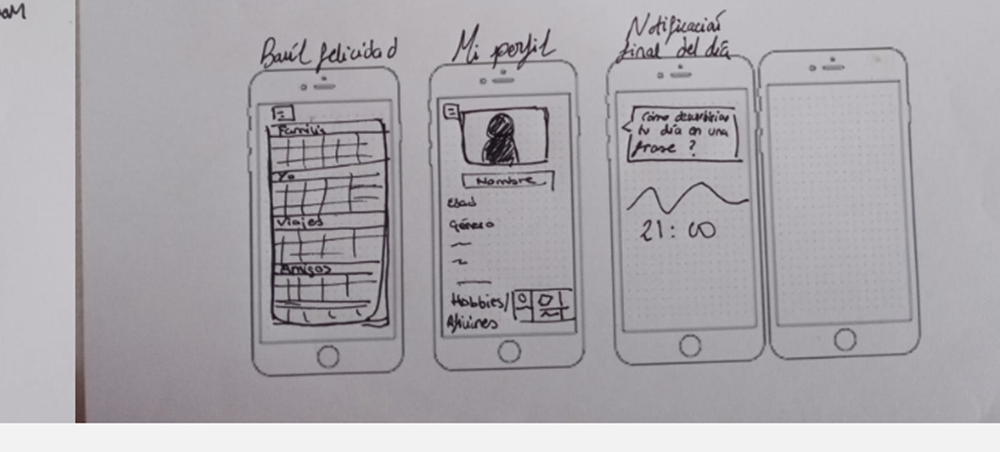
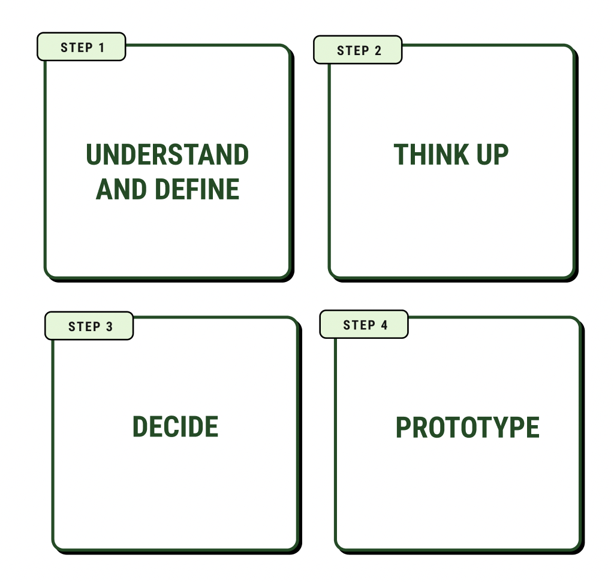

Hotaru was born during a UXER School Spain mentorship in 2020, in the middle of the pandemic lockdown. As a team we framed several problems around "isolation and reconnection" and voted for the one that spoke to us most.
We found that we had the technology to keep us company, but we didn't know how to use it to connect with ourselves.
How might we use technology in the right way to connect with ourselves?

Looking at patterns in the interviews and the data we gathered, we reached a key insight: women aged 37 to 55, with children, were going through the most pronounced emotional loop, and that was where we had the biggest opportunity to make an impact.
We mapped María's full day, crossing her activities with three phases: before downloading the app, while using it and after. The emotional arc is telling. It starts in worry and uncertainty. While she uses the app, the excitement of planning a healthier life appears. Afterwards come confidence and appreciation for what she has. That emotional arc became the heart of Hotaru's value proposition.

With the insights analyzed, and after several sessions of discussion and voting, we reached three HMWs that organized ideation around four themes: emotions, uncertainty and safety; time, routines and activities; use of technology; and connection with others.
We ran a Crazy Eights session as a team to explore many possible solutions quickly before converging. The first flow came out of it: opening the app, biometric scan, mood level for the day, reports and activity recommendations, happiness chest, profile, and closing the day with a reflective phrase.



